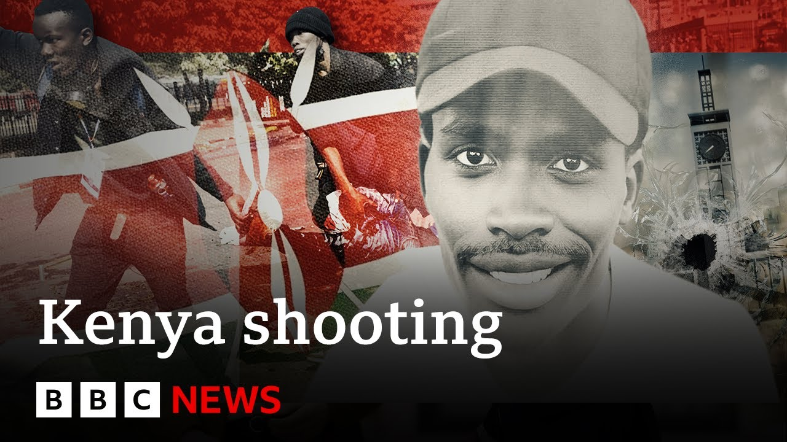

更多有意思的英语学习视频，请到B站Global每日双语简报！
【BBC曝光肯尼亚反增税抗议者遭射杀事件中的安全部队人员 | BBC新闻】
Summary: A BBC investigation reveals a Kenyan soldier shot protesters during anti-tax demonstrations at parliament, identifying the shooter through video analysis amid claims of military involvement.
摘要： BBC调查揭露一名肯尼亚士兵在议会反增税示威中射杀抗议者，通过视频分析确认枪手身份，并涉及军方参与的说法。

⏱️ Estimated Reading Time: 4 min
A new investigation by BBC Africa Eye has exposed a Kenyan soldier who shot protesters at Kenya's parliament last year.
BBC非洲之眼的一项新调查揭露了一名去年在肯尼亚议会射杀抗议者的士兵。
Demonstrations against a proposed finance bill spiraled out of control when thousands of young Kenyans flocked to the parliament to stop the bill at its final reading.
针对一项财政法案的示威活动失控，数千名肯尼亚年轻人涌向议会试图阻止法案的最终通过。
Reaca Selena reports.
里卡·塞莱娜报道。
In a warning, this story does contain images some viewers may find distressing.
提醒：本报道包含可能引发不适的画面。
This is Eric.
这是埃里克。
He's caught in a stampede heading out of Kenya's parliament.
他在逃离肯尼亚议会时陷入踩踏事件。
He reaches the exit and [Music] then Eric Shieni never made it home.
他到达出口，[音乐] 但埃里克·希耶尼再也没能回家。
Good day. Good day. Perfect day.
美好的一天。美好的一天。完美的一天。
He was a 27-year-old student at the University of Nairobi.
他是内罗毕大学一名27岁的学生。
On June 25th, he joined a protest against the government's 2024 finance bill.
6月25日，他参加了反对政府2024年财政法案的抗议活动。
While it claimed increasing taxes would address the country's growing debt problem, hundreds of thousands of Kenyans disagreed.
尽管政府声称增税将解决国家日益严重的债务问题，但数十万肯尼亚人表示反对。
[Music] The protesters aim was to occupy the parliament to stop the bill passing into law.
[音乐] 抗议者的目标是占领议会以阻止法案通过成为法律。
But along the way, they met tear gas, trench, and even gunfire.
但在过程中，他们遭遇了催泪瓦斯、路障甚至枪击。
Eric was one of at least three people shot dead at Kenya's parliament.
埃里克是肯尼亚议会至少三名被射杀者之一。
But by who?
但凶手是谁？
In his case, the answers in the video of his final steps.
在他的案例中，答案藏在他最后脚步的视频里。
The moment before he shot, an armed man steps into view.
在他中枪前一刻，一名武装男子进入画面。
We've mapped this and 5,000 photos and videos like it to reconstruct what happened that day.
我们通过分析这段视频及5000份类似素材还原了当天事件。
The second after this moment is captured, gunfire is heard and Eric's body falls to the floor.
这一瞬间被记录后的下一秒，枪声响起，埃里克倒地。
While we can't see his face, we can see his uniform has distinctive features.
虽然无法看清他的脸，但其制服有明显特征。
We compared those features to more than 150 images taken at the site within 10 minutes of the shooting.
我们将其特征与枪击后10分钟内现场150多张图像进行比对。
Only one man was a match, him.
仅有一人匹配——就是他。
Several senior officers in Kenya's defense forces confirmed his uniform is that of the Kenyan army.
肯尼亚国防军数名高级军官确认其制服属于肯尼亚陆军。
A force not known for turning its guns on civilians.
这是一支素来不以枪口对准平民著称的部队。
Our investigation found this soldier shot Eric Shieni as he was running away from parliament.
调查发现这名士兵在埃里克·希耶尼逃离议会时开枪。
We put these allegations to the Kenya Defense Forces, the KDF.
我们向肯尼亚国防军（KDF）提出这些指控。
They said the authority currently investigating the events has not forwarded any request to look into any KDF personnel involved in the operations.
对方回应称，负责调查的机构尚未就涉事KDF人员提出审查要求。
The KDF remains fully committed to upholding the rule of law and continues to operate strictly within its constitutional mandate.
KDF表示始终恪守法治，严格在宪法授权范围内行动。
Reno Selena, BBC News.
雷诺·塞莱娜，BBC新闻。
Well, if you want to watch the full documentary from BBC Africa Eye Blood Parliament, you can find it on BBC i Player on the BBC News Africa YouTube page as
若想观看BBC非洲之眼《血色议会》完整纪录片，请访问BBC iPlayer或BBC新闻非洲频道YouTube页面。